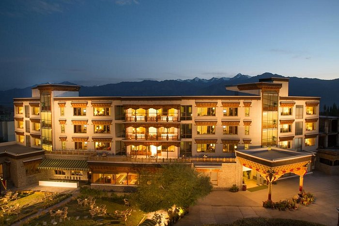
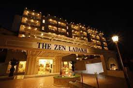
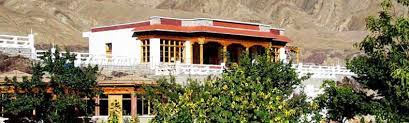
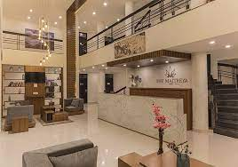
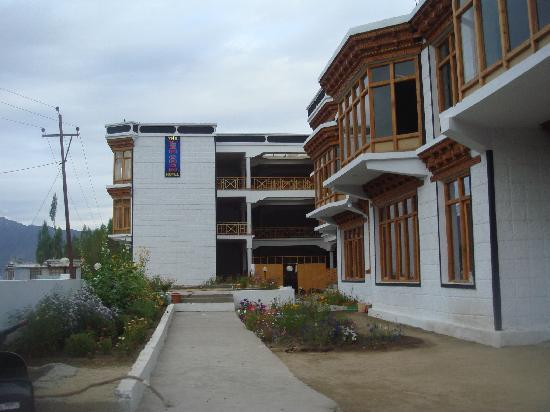
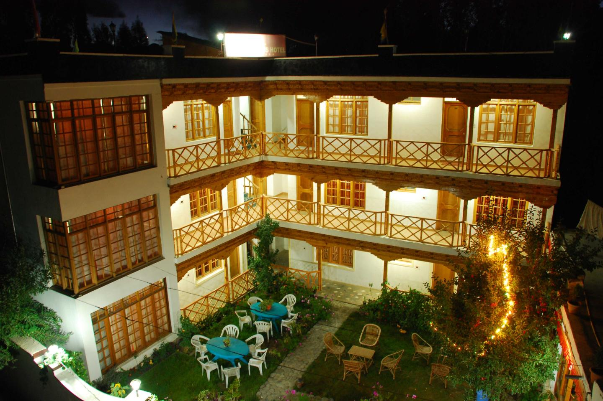
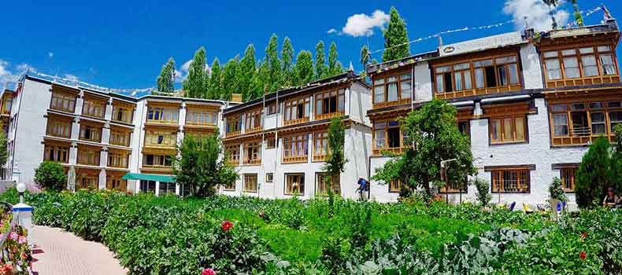
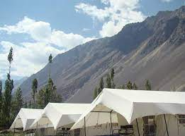

Luxury Hotels in Leh Ladakh
Details of Luxury hotels in Leh Ladakh is an act to facilitate the information for best hotels around the city. This is not an act to compare one hotel to other and does not define the star category of the hotel at one place. Limitation of the hotels in Leh Ladakh region this is a simple act to choose the best hotel which may suite your requirements. We wish to bring to your kind notice that a particular category is defined in Leh Ladakh hotels which is based on A Grade ++ | A Grade | B Grade and C Grade by Tourism department.

The Grand Dragon Ladakh
Click On The Picture
Eco-friendly The Grand Dragon Ladakh is fitted with solar panels and energy conserving features. Situated in the ancient city of Leh, it overlooks the famous Cold Desert and the surrounding mountains. Cultural shows and evening bonfires are available upon demand. The Grand Dragon Ladakh is a 10-minute walk from Leh Palace and Leh Market. It is a 5-minute walk from the Main Bus Stand and a 10-minute drive from Shanti Stupa. SNM General Hospital is 1 km away, while Kushok Bakula Leh Airport is 3 km from the hotel.Enjoy majestic views of mountains and Leh's landmarks from The Grand Dragon that feature the Sojla bakery and local cuisine.
Room Facility
Facility
The Zen Ladakh
 Click On The Picture
Get pampered in luxury within the finest ambience in Leh The Zen Ladakh is a 4-star hotel conveniently positioned at Sheldan Fort Road in Leh. It is located 3 km from Kushok Bakula Rimpochhe Airport, overlooking the picturesque mountain ranges and featuring well-appointed accommodations. This premium property is about 500 metres from Zorawar Singh Fort and 1 km from Tibetan Market. The hotel has an inviting swimming pool, a state-of-the-art fitness centre, beauty parlour, steam bath, and a salon. It is also equipped with a conference hall that can seat 120 people. Free Wi-Fi is available for the convenience of guests. Other facilities include a travel desk, doctor-on-call facility, shopping arcade, and parking space.
Hotel Facility
Hotel Shangrila Ladakh

Click On The Picture
A budget property, Hotel Shangrila is located 4.1 km from Leh Airport, 429 km from Srinagar Railway Station and 1 km from Bus Stand. Some of the most famous tourist attractions of the city, where guests can visit are Leh Palace (2.9 km), Shanti Stupa (4.8 km), Namgyal Tsemo Monastery (5.1 km), Spituk Monastery (6.8 km), Thikse Monastery (16.7 km) and Phyang Monastery (19.3 km). For accommodation, the property offers spacious, airy and well-lit rooms, featuring simple decor and furnishings. They come with in room amenities like television, intercom and bathroom with running water and essential toiletries. The array of essential services rendered by the hotel for a hassle free stay includes laundry, doctor on call, travel desk, parking, taxi service and ayurvedic centre. Those on business tour can host meetings, conferences and seminars as it features well-equipped conferencing facilities making it a perfect base for business travelers. It is all about the experience that goes beyond the ordinary!
Facility
Deluxe Hotels in Ladakh
Deluxe hotels may contain the maximum information based on A grade hotels in Leh and Ladakh region. Which are considered / compared with 3 star facility hotels. Nice rooms constructed on ethnic structure basis with a large window and all modern amenities. Present categorization of the hotel may differ and subject to update. !
Alchi Resort
Click On The Picture
The Alchi Resort is a deluxe hotel in the beautiful environs of Leh, Ladakh. The hotel offers comfortable accommodation with modern amenities to its guests. The Alchi Resort is located at Leh in Ladakh. The hotel offers a range of facilities to its guests like a lawn, doctor on call, in house laundry and dry cleaning, and Internet facility. The hotel also offered Luxury Swiss Tents for camping and organized treks outside the Hotel in Ladakh valley.
Facility
The Maitreya Ladakh
Click On The Picture
Hotel The Maitreya Ladakh is a luxury hotel located centrally with modern amenities and facilities. It is located at the heart of the city with all main attractions within the range of 3 to 5 km including the Airport. There are 24 Executive spacious rooms with local essence. The rooms are having Ladakhi touch with contemporary style and color. This hotel offers a unique experience with meticulously crafted architecture and ambiance with a local touch.
Facility
Room Facility
The Leh-Chen Hotel
Click On The Picture
The Leh Chen is a deluxe hotel in the beautiful environs of Leh, Ladakh. The hotel offers comfortable accommodation with modern amenities to its guests. The Leh Chen is located at Leh in Ladakh. The hotel offers a range of facilities to its guests like a conference hall, VIP lounge, shopping arcade, elevators, lawn, jogging track, doctor on call, in house laundry and dry cleaning and a body-massage chair. The hotel also offered Luxury Swiss Tents for camping and organized treks outside the Hotel in Ladakh valley.
Facility
Standard Hotels in Ladakh
Nestled in the lap of the Himalayas, the cold desert of Ladakh has a stark beauty about it. Whether you're looking for a relaxing holiday or a rush of adrenaline, Leh & Ladakh always has something to offer. A visit to this beautiful mountain kingdom is a once-in-a-lifetime experience and we have picked out the top 10 hotels in Leh, Ladakh that will ensure a memorable stay.
Hotel Dreamland
Click On The Picture
The Dreamland is a 2 Star Standard hotel in the beautiful environs of Leh, Ladakh. The hotel offers comfortable accommodation with modern amenities to its guests. The Dreamland is located at Leh in Ladakh. The hotel offers a range of facilities to its guests like a, lawn, doctor on call, Heating System for winters, in house laundry and dry cleaning and a STD/ISD facilities. The hotel also offered Luxury Swiss Tents for camping and organized treks outside the Hotel in Ladakh valley.
Facility
Oriental Hotel & Guest House
Click On The Picture
The Oriental guest house is a 3 Star Standard hotel in the beautiful environs of Leh, Ladakh. The hotel offers comfortable accommodation with modern amenities to its guests. The Oriental guest house is located at Leh in Ladakh. The hotel offers a range of facilities to its guests like a, lawn, doctor on call, Wi-fi internet, in house laundry and dry cleaning ,STD/ISD facilities, and a Library Facilities. The hotel also offered Luxury Swiss Tents for camping and organized treks outside the Hotel in Ladakh valley.
Facility
Camping in Nubra Valley
Camping in Nubra Valley The best camps in Nubra Valley will open up a world filled with gorgeous mountain sceneries, gurgling streams, lush valleys and ancient monasteries in the distant, all call out to you to come and live in this paradise. Camping is an activity that can be enjoyed at any age or time and is a truly enriching and rejuvenating experience for one's mind, body, and soul. Camping under the stars with a bonfire to keep you warm and the comfort of a loved one to hold you tight, cannot get any more perfect. Whether you like the peace and serenity of the mountainside or the thrill and rush of adventure activities here, camping in Nubra Valley caters to all kinds of travelers offering only the best experiences to cherish a long long time.
Double Humped Camp Hunder
Click On The Picture
Double Humped Camp Hunder Camps In LadakhCamps In LadakhCamps In LadakhCamps In LadakhCamps In LadakhCamps In LadakhCamps In Ladakh About Double Humped Camp Hunder It all started with two friends' road trip to this rain shadowed area of the mighty Himalayas, 'Ladakh', in the year 2008. Namgyal, a Ladhaki, and Chophel, a Tibetan, both from Delhi, travelled the length and breadth of their cherished kingdom, revisiting their own people, their life and the breathtakingly beautiful, vast, barren landscape which ultimately become focus of their life's work as 'Double Humped Camp' at Hunder, Nubra Valley. The Double Humped Camp-Hunder is a beautiful and serene campsite located in Hunder in the Ladakh region. Hunder is the last point for tourists along the road which leads to the army base camp for Siachen glacier and it serves as the ideal base for tourists exploring the beautiful Nubra Valley. It is approximately 125km / 4hrs drive from Leh city at an altitude of 10,000 ft or 3,050mt. Nestled amongst the mountains with a spectacular view of the sand dunes, the camp is a perfect blend of wilderness and serenity and we strive to make the experience unforgettable by combining this with exceptional, personalized service, warmth and hospitality. The camp reminds you of the simplicity and warmth that is way of people of Ladakh. It is surely going to be a life time experience for our visitors. We have 10 deluxe camps with double occupancy, attached bathrooms and a separate dining area. Special care is taken to cater to the visitors' choice of cuisine by an experienced chef. It is also fully equipped with a first aid kit including oxygen cylinder for emergency acute mountain sickness (AMS) although AMS is very unlikely considering Hunder is at 10,000 ft. We have 10 deluxe camps with double occupancy; each tented accommodation has well-appointed attached bath and a separate dining area. Special care is taken to cater to the visitors' choice of cuisine by an experienced chef. It is also fully equipped with a first aid kit. Read on to find out more about what all you can do here, our packages and how to make your stay unforgettable.